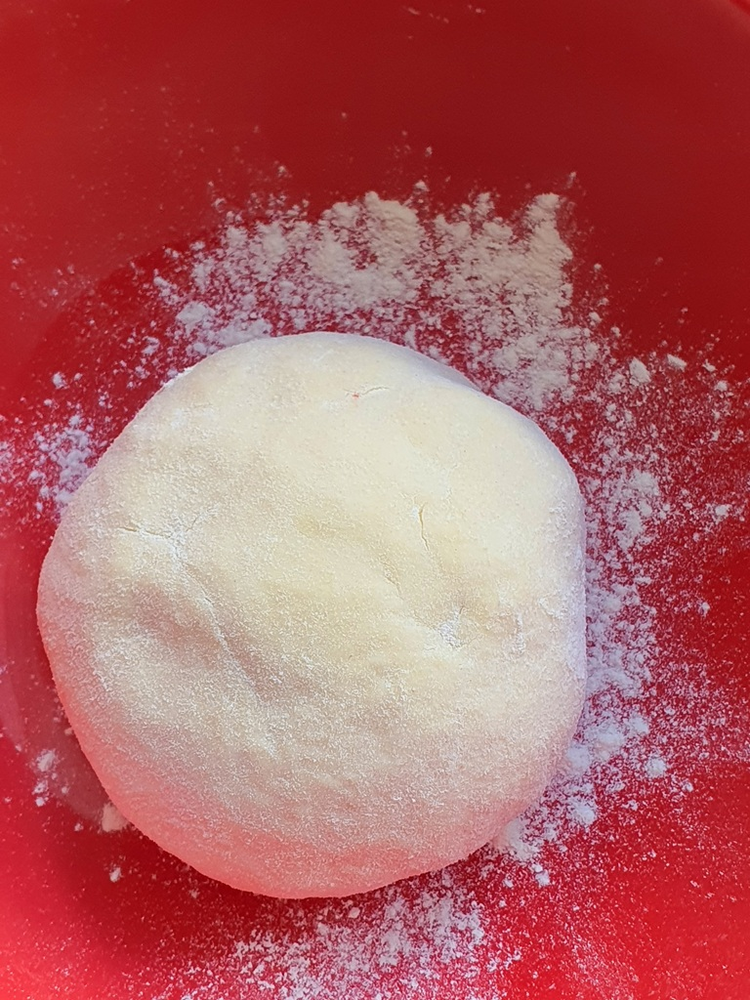
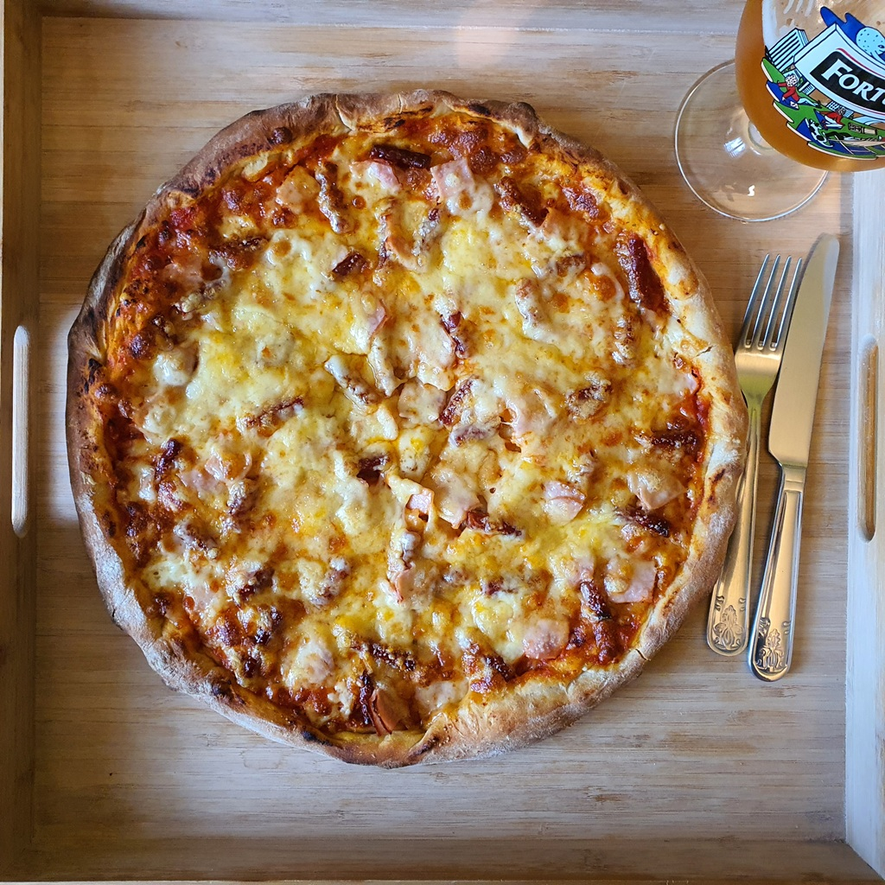
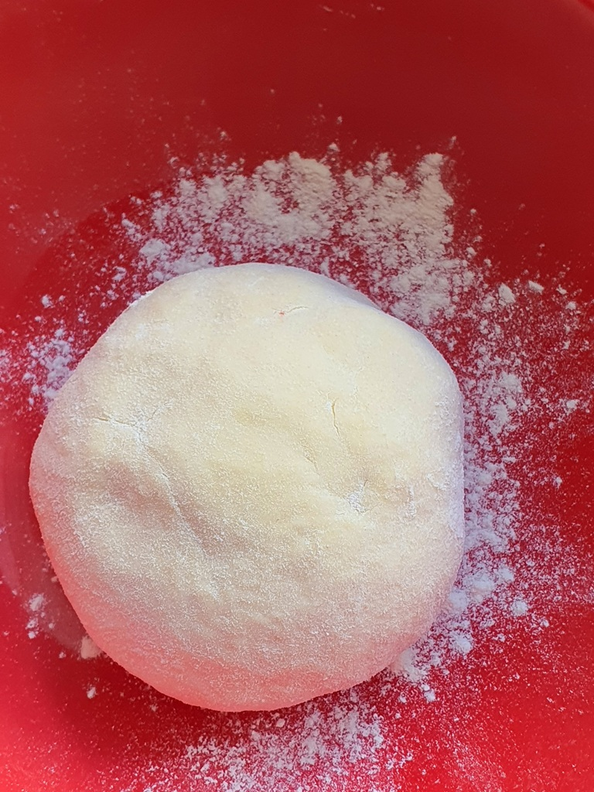
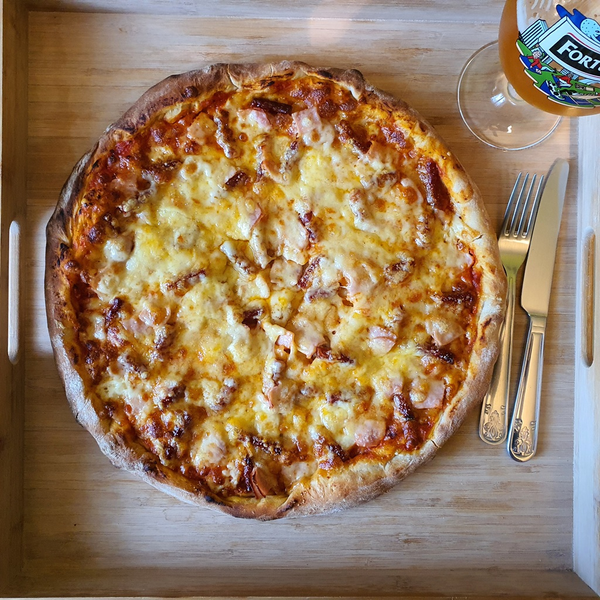

Skład:
- mąka około 250g;
- woda;
- drożdże;
- sól;
- cukier;
- olej bądź oliwa z oliwek;
Przygotowanie:
Mąkę napowietrzyć i przełożyć do miski; po czym dodać soli wg uznania. W szklance przygotować drożdże z wodą, odrobiną soli i połową łyżeczki curku. Przygotowany dekokt dodać do mąki wraz z łyżką oleju/oliwy z oliwek. Wyrobić ciasto do momentu uzyskania jednolitej masy i odstawić pod przykryciem (najlepiej z wigodniej szmatki kuchennej) na conajmniej 2h (im dłużej tym lepiej, byle ciasto nie obeschło).
Zdjęcia:
 


